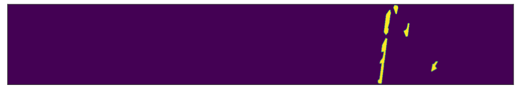
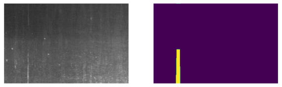
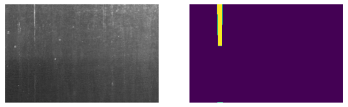
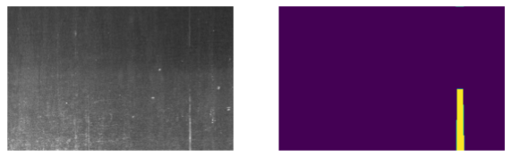
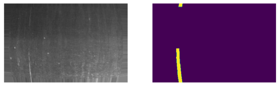

path = Path("../data")
assert path.is_dir()Transforms
Fastai Transforms API to Severstal dataset.
The fastai data block API cannot give us a tuple (input,target) data for our Deep Learning model. That’s why we need to create custom Transforms to fix this problem and leverage anyway the high level framework.
train_pivot = get_train_df(path, only_faulty=True, pivot=True)
print("Train pivot shape: ", train_pivot.shape)
train_pivot.head(n=3)Train pivot shape: (6666, 6)| ClassId | 1 | 2 | 3 | 4 | n | ClassIds |
|---|---|---|---|---|---|---|
| ImageId | ||||||
| 0002cc93b.jpg | 29102 12 29346 24 29602 24 29858 24 30114 24 30370 24 30626 24 30882 24 31139 23 31395 23 31651 23 31907 23 32163 23 32419 23 32675 23 77918 27 78174 55 78429 60 78685 64 78941 68 79197 72 79452 77 79708 81 79964 85 80220 89 80475 94 80731 98 80987 102 81242 105 81498 105 81754 104 82010 104 82265 105 82521 31 82556 69 82779 27 82818 63 83038 22 83080 57 83297 17 83342 50 83555 13 83604 44 83814 8 83866 37 84073 3 84128 31 84390 25 84652 18 84918 8 85239 10 85476 29 85714 47 85960 57 86216 57 86471 58 86727 58 86983 58 87238 59 87494 59 87750 59 88005 60 88261 60 88517 60 88772 61 89028 53... | NaN | NaN | NaN | 1 | 1 |
| 0007a71bf.jpg | NaN | NaN | 18661 28 18863 82 19091 110 19347 110 19603 110 19859 110 20115 110 20371 110 20627 110 20883 110 21139 110 21395 110 21651 110 21962 55 293125 251 293381 251 293637 251 293893 251 294149 251 294405 251 294661 251 294917 251 295173 251 295429 251 295685 251 295941 251 296197 251 296453 251 296709 251 296965 251 297221 251 297477 251 297733 251 297989 251 298245 251 298564 188 298945 63 | NaN | 1 | 3 |
| 000a4bcdd.jpg | 37607 3 37858 8 38108 14 38359 20 38610 25 38863 28 39119 28 39375 29 39631 29 39887 29 40143 29 40399 29 40655 30 40911 30 41167 30 41423 30 41679 31 41935 31 42191 31 42447 31 42703 31 42960 31 43216 31 43472 31 43728 31 43984 31 44240 32 44496 32 44752 32 45008 32 45264 33 45520 33 45776 33 46032 33 46288 33 46544 34 46803 31 47065 25 47327 19 47588 15 47850 9 48112 3 62667 12 62923 23 63179 23 63348 3 63435 23 63604 7 63691 23 63860 11 63947 23 64116 15 64203 23 64372 19 64459 23 64628 24 64715 23 64884 28 64971 23 65139 33 65227 23 65395 37 65483 23 65651 41 65740 22 65907 45 65996 22... | NaN | NaN | NaN | 1 | 1 |
train_example = train_pivot.sample().iloc[0]
train_example.name'fdab86eb7.jpg'The Data pipeline: SteelMask Block
Get_x transform
ReadImagePathFromIndex
ReadImagePathFromIndex (pref)
Read image name from train_pivot and returns the image path
With the ReadImagePathFromIndex transform we can get the first information of the training example, the image path for train_example from train_pivot. In setup we need to specify the prefix to be added to the ImageId of the training image.
x_tfm = ReadImagePathFromIndex(pref=(path/"train_images"))x = x_tfm(train_example)
test_eq(x, str(path/"train_images"/train_example.name))Get_y transform
ReadRLEs
ReadRLEs (cols=[1, 2, 3, 4])
Read RLEs from train_pivot and return a list or RLEs.
With the ReadRLEs transform we can get our labels, the list of RLEs (one for each ClassIds). In the setup we need to specify the column names of the ClassId. In input we pass the train_example and we get a list of strings as output.
cols = [1,2,3,4]
y_tfm = ReadRLEs(cols=cols)
rles = y_tfm(train_example)
test_eq(len(rles), 4)
test_eq(rles, [train_example[i] if not train_example[i] is np.nan else '' for i in cols])Get Mask from RLEs
MakeMask
MakeMask (flatten=True)
Read RLEs list and return a np.array of the mask
The MakeMask transform needs a list of RLEs and returns a mask with (256, 1600) shape if flatten is True (default). If flatten is False returns a (256, 1600, 4) array.
mask_tfm = MakeMask(flatten=False)
mask = mask_tfm(rles)
test_eq(mask.shape, (256,1600,4))
# Default transform with flatten mask for PILMask.create
flatten_mask_tfm = MakeMask()
flatten_mask = flatten_mask_tfm(rles)
test_eq(flatten_mask.shape, (256,1600))plt.figure(figsize=(15,5))
plt.xticks([])
plt.yticks([])
plt.imshow(flatten_mask);
rle = mask_tfm.decode(mask)
test_eq(rle, rles)
flatten_rle = flatten_mask_tfm.decode(flatten_mask)
test_eq(flatten_rle, rles)Finally, a Datasets object can be built from the two Pipelines created with the previous transforms.
x_tfms = Pipeline([x_tfm, PILImage.create])
y_tfms = Pipeline([y_tfm, flatten_mask_tfm, PILMask.create])
dsets = Datasets(train_pivot, [x_tfms, y_tfms])
elem = dsets.train[1]
image, mask = elem
type(elem), image, mask(tuple, PILImage mode=RGB size=1600x256, PILMask mode=F size=1600x256)_,axs = plt.subplots(1,3, figsize=(20, 5))
image.show(ctx=axs[0], title='image')
mask.show(alpha=1, ctx=axs[1], vmin=1, vmax=30, title='mask')
image.show(ctx=axs[2], title='superimposed')
mask.show(ctx=axs[2], vmin=1, vmax=30);4-channel Mask
ChannelMask
ChannelMask (enc=None, dec=None, split_idx=None, order=None)
Transform (x,y) tensor masks from [w, h] to [channels, w, h]
The ChannelMask transform changes the shape of the mask from a flatten (256, 1600) to (4, 256, 1600).
tens = ToTensor()
timg, tmask = tens(elem)
timg.shape, tmask.shape, tmask.dim()(torch.Size([3, 256, 1600]), torch.Size([256, 1600]), 2)tfm = ChannelMask()
ch_mask = tfm(tmask)
ch_mask.shape, ch_mask.dim()(torch.Size([4, 256, 1600]), 3)decoded_mask = tfm.decodes(ch_mask)
decoded_mask.shapetorch.Size([256, 1600])test_close(decoded_mask, tmask)show_images((decoded_mask,tmask), figsize=(15,5));It works with batches:
bs_tmask = tmask.unsqueeze(0).expand(6, -1, -1)
tfm = ChannelMask()
bs_ch_mask = tfm(bs_tmask)
bs_ch_mask.shape, bs_ch_mask.dim()(torch.Size([6, 4, 256, 1600]), 4)decoded_bs_mask = tfm.decodes(bs_ch_mask)
decoded_bs_mask.shapetorch.Size([6, 256, 1600])for ch, tmp_mask in enumerate(bs_ch_mask):
test_close(decoded_bs_mask[ch, ...], bs_tmask[ch, ...])Albumentation transforms
img, mask = elem
img, mask = np.array(img), np.array(mask)
img.shape, mask.shape((256, 1600, 3), (256, 1600))Some augmentations from the albumentation library:
import cv2
def show_aug(aug, img, mask):
aug_elem = aug(image=img, mask=mask)
aug_crop_img = aug_elem["image"]
aug_crop_mask = aug_elem["mask"]
print(aug_crop_img.shape, aug_crop_mask.shape)
print(f"Unique elems in mask: {np.unique(aug_crop_mask)}")
show_images((aug_crop_img, aug_crop_mask), figsize=(10,20))
return aug_crop_img, aug_crop_maskaug = alb.CropNonEmptyMaskIfExists(256, 400, p=1., ignore_values=[0])
aug_crop_img, aug_crop_mask = show_aug(aug, img, mask)(256, 400, 3) (256, 400)
Unique elems in mask: [0. 3.]
aug = alb.VerticalFlip(p=1.)
aug_img, aug_mask = show_aug(aug, aug_crop_img, aug_crop_mask)(256, 400, 3) (256, 400)
Unique elems in mask: [0. 3.]
aug = alb.HorizontalFlip(p=1.)
aug_img, aug_mask = show_aug(aug, aug_crop_img, aug_crop_mask)(256, 400, 3) (256, 400)
Unique elems in mask: [0. 3.]
aug = alb.ElasticTransform(p=1., alpha=120, sigma=120 * 0.05, alpha_affine=120 * 0.03)
aug_img, aug_mask = show_aug(aug, aug_crop_img, aug_crop_mask)(256, 400, 3) (256, 400)
Unique elems in mask: [0. 3.]aug = alb.GridDistortion(p=1.)
aug_img, aug_mask = show_aug(aug, aug_crop_img, aug_crop_mask)(256, 400, 3) (256, 400)
Unique elems in mask: [0. 3.]aug = alb.OpticalDistortion(distort_limit=0.5, shift_limit=0.05, p=1., border_mode=cv2.BORDER_REPLICATE)
aug_img, aug_mask = show_aug(aug, aug_crop_img, aug_crop_mask)(256, 400, 3) (256, 400)
Unique elems in mask: [0. 3.]
All is wrapped up in get_train_aug and get_valid_aug for training and validation augmentations. Then AlbumentationTransform is a mixed Transform for the DataBlock.
AlbumentationsTransform
AlbumentationsTransform (train_aug, valid_aug)
A transform handler for multiple Albumentation transforms
get_valid_aug
get_valid_aug (height, width)
get_train_aug
get_train_aug (height, width)
train_aug = get_train_aug(256, 400)
aug_img, aug_mask = show_aug(train_aug, aug_crop_img, aug_crop_mask)(256, 400, 3) (256, 400)
Unique elems in mask: [0. 3.]valid_aug = get_valid_aug(256, 400)
aug_img, aug_mask = show_aug(valid_aug, aug_crop_img, aug_crop_mask)(256, 400, 3) (256, 400)
Unique elems in mask: [0. 3.]alb_tfm = AlbumentationsTransform(train_aug, valid_aug)
alb_aug_elem = alb_tfm(elem, split_idx=0)
show_images(alb_aug_elem, figsize=(15, 10))
SteelMaskBlock
SteelMaskBlock
SteelMaskBlock (train_aug, valid_aug)
SteelDatablock
SteelDataBlock
SteelDataBlock (path, splitter=None, train_aug=None, valid_aug=None, *args, **kwargs)
Get the DataBlock for Severstal Dataset.
splitter = TrainTestSplitter(0.15)
block = SteelDataBlock(path, splitter)
dls = block.dataloaders(
source=train_pivot,
bs=16,
num_workers=0
)
xb, yb = dls.one_batch()
xb.shape, yb.shapeC:\Users\beanTech\miniconda3\envs\steel_segmentation\lib\site-packages\torch\_tensor.py:575: UserWarning: floor_divide is deprecated, and will be removed in a future version of pytorch. It currently rounds toward 0 (like the 'trunc' function NOT 'floor'). This results in incorrect rounding for negative values.
To keep the current behavior, use torch.div(a, b, rounding_mode='trunc'), or for actual floor division, use torch.div(a, b, rounding_mode='floor'). (Triggered internally at ..\aten\src\ATen\native\BinaryOps.cpp:467.)
return torch.floor_divide(self, other)(torch.Size([16, 3, 224, 1568]), torch.Size([16, 4, 224, 1568]))K-Folds strategy
The scikit-learn StratifiedKFold class for this dataset.
nsplits = 2
# df = train_pivot[[1,2,3,4]].stack().to_frame().reset_index()
df = train_pivot.reset_index()
X = df["ImageId"].to_numpy()
y = df["ClassIds"].to_numpy()
X.shape, y.shape((6578,), (6578,))skf = StratifiedKFold(n_splits=nsplits, shuffle=True)
dsets = {i: _ for i in range(nsplits)}
for i, (train_index, valid_index) in enumerate(skf.split(X, y)):
print(
f"{i}-fold:",
f"Train: #{len(train_index)}, e.g. {train_index[:5]}",
f"Valid: #{len(valid_index)}, e.g. {valid_index[:5]}",
sep='\n', end='\n\n')0-fold:
Train: #3289, e.g. [ 1 6 12 13 15]
Valid: #3289, e.g. [0 2 3 4 5]
1-fold:
Train: #3289, e.g. [0 2 3 4 5]
Valid: #3289, e.g. [ 1 6 12 13 15]
get_kfold_splits
get_kfold_splits (df_pivot, nsplits=2)
splits = get_kfold_splits(train_pivot, nsplits=2)0-fold:
Train: #3289, e.g. [ 0 2 5 6 12]
Valid: #3289, e.g. [1 3 4 7 8]
1-fold:
Train: #3289, e.g. [1 3 4 7 8]
Valid: #3289, e.g. [ 0 2 5 6 12]
KFoldSplitter
KFoldSplitter (splits, idx)
splits[[(#3289) [0,2,5,6,12,17,18,19,23,26...],
(#3289) [1,3,4,7,8,9,10,11,13,14...]],
[(#3289) [1,3,4,7,8,9,10,11,13,14...],
(#3289) [0,2,5,6,12,17,18,19,23,26...]]]SteelDataLoaders
SteelDataLoaders
SteelDataLoaders (block, source, bs, *args, **kwargs)
Get the DataLoaders for Severstal Dataset.
dls = SteelDataLoaders(block, train_pivot, bs=16, size=(256, 400))
xb, yb = dls.one_batch()
xb.shape, yb.shape(torch.Size([16, 3, 224, 1568]), torch.Size([16, 4, 224, 1568]))for idx, split in enumerate(splits):
block = SteelDataBlock(path, splitter=KFoldSplitter(splits, idx))
dls = SteelDataLoaders(block, train_pivot, bs=16, size=(256, 400))
print(f"{i} - Train items:\n{dls.train.items.ClassIds.value_counts()}")
print(f"{i} - Valid items:\n{dls.valid.items.ClassIds.value_counts()}")1 - Train items:
3 2346
1 381
4 254
3 4 140
2 97
1 3 45
1 2 18
2 3 7
1 2 3 1
Name: ClassIds, dtype: int64
1 - Valid items:
3 2345
1 382
4 254
3 4 141
2 97
1 3 45
1 2 17
2 3 7
1 2 3 1
Name: ClassIds, dtype: int64
1 - Train items:
3 2345
1 382
4 254
3 4 141
2 97
1 3 45
1 2 17
2 3 7
1 2 3 1
Name: ClassIds, dtype: int64
1 - Valid items:
3 2346
1 381
4 254
3 4 140
2 97
1 3 45
1 2 18
2 3 7
1 2 3 1
Name: ClassIds, dtype: int64